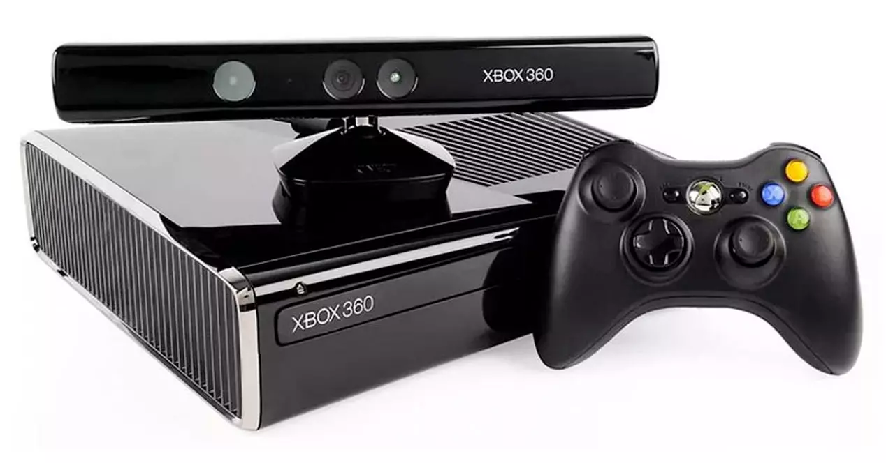

Xbox 360
Microsoft, consciente de la desventaja que traía de su anterior Xbox original, corrió para tener cuanto antes su apuesta de futuro. El resultado fue Xbox 360, una máquina sólida en su hardware, muy competitiva, más barata que PS3 y que contaba con el apoyo de una industria que ya estaba viendo con cierto resquemor el éxito de Sony. Su cuota de mercado con PS2, muy superior a la que alcanzó con PSX, movió a muchos resortes de la industria a apoyar un contrapeso para evitar monopolios que son siempre dañinos para la innovación.